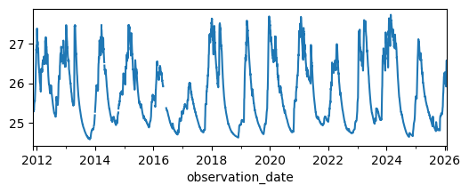
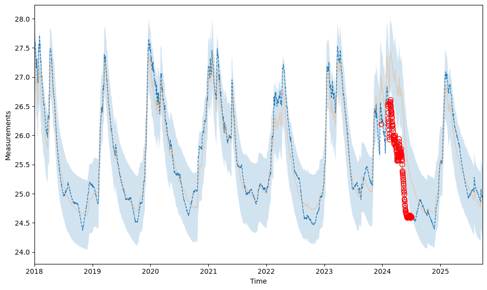
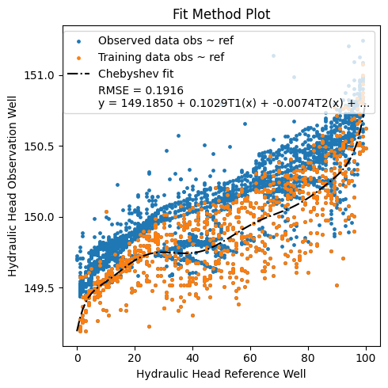
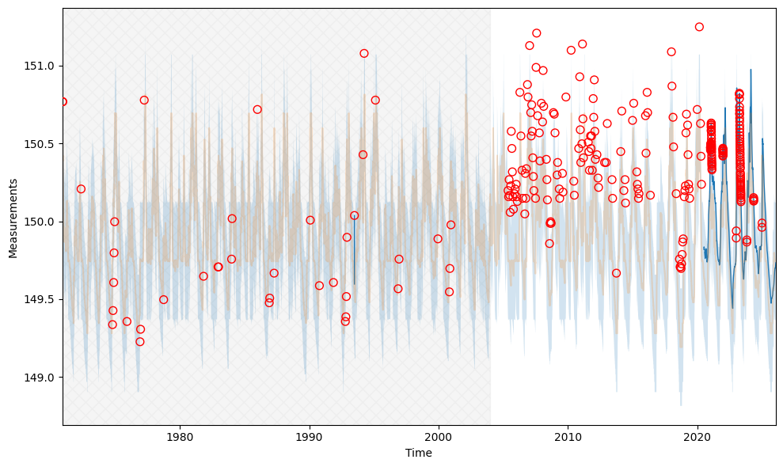

Using SGU wells#
This notebook demonstrates the use of the python package sgu-client and how to integrate with gwrefpy. The package is installed along with gwrefpy if recommended add-ons are included: pip install "gwrefpy[recommended]"
The Geological Survey of Sweden (SGU) serves an API for their groundwater monitoring network. A Python implementation of an API client has been developed in sgu-client which makes getting observed groundwater levels from SGU into Python a breeze.
Note
The sgu-client package is not affiliated with, supported or endorsed by SGU.
import gwrefpy as gr
from sgu_client import SGUClient
import warnings
warnings.filterwarnings("ignore")
gr.set_log_level("ERROR")
Log level set to ERROR
Getting observed groundwater levels#
This basic example will show how to fetch observed groundwater levels. For more options, please refer to these docs.
Below, we wrangle the data in two steps:
remove the UTC timezone from the fetched timeseries to achieve compatibility with the example model we will load later,
resample to daily medians to align the frequency with that of the example model we will load later
with SGUClient() as client:
lagga_levels = client.levels.observed.get_measurements_by_name("95_2").to_series()
lagga_levels.index = lagga_levels.index.tz_convert(None)
lagga_levels = lagga_levels.resample("1D").median()
_ = lagga_levels.plot(figsize=(6, 2))

Inserting as a reference well in a Model#
For this basic demonstration, we will load a tutorial model and add our newly fetched SGU well as a reference well.
model = gr.Model("deviation_example.gwref")
model.wells_summary()
| name | well_type | data_points | start_date | end_date | mean_level | latest_value | latest_date | latitude | longitude | elevation | best_fit_ref_well | best_rmse | num_fits | avg_rmse | |
|---|---|---|---|---|---|---|---|---|---|---|---|---|---|---|---|
| 0 | 19W110U | observation | 2824 | 2018-01-01 | 2025-09-24 | 25.657419 | 24.949029 | 2025-09-24 | None | None | None | None | None | NaN | NaN |
| 1 | 19W100U | reference | 2824 | 2018-01-01 | 2025-09-24 | 25.757644 | 24.873000 | 2025-09-24 | None | None | None | NaN | NaN | 0.0 | None |
well_object = gr.Well("95_2", is_reference=True, timeseries=lagga_levels)
model.add_well(well_object)
model.fit("19W110U", "95_2", offset="0D") # both are sampled daily
2026-01-29 06:54:22,495 - gwrefpy.methods.linregressfit - WARNING - tmin is None, setting to min common time of both wells
2026-01-29 06:54:22,496 - gwrefpy.methods.linregressfit - WARNING - tmax is None, setting to max common time of both wells
| Statistic | Value | Description |
|---|---|---|
| RMSE | 0.3025 | Root Mean Square Error |
| R² | 0.8736 | Coefficient of Determination |
| R-value | 0.9346 | Correlation Coefficient |
| Slope | 0.9033 | Linear Regression Slope |
| Intercept | 2.3905 | Linear Regression Intercept |
| P-value | 0.0000 | Statistical Significance |
| N | 2824 | Number of Data Points |
| Std Error | 0.3026 | Standard Error |
| Confidence | 95.0% | Confidence Level |
Calibration Period: 2018-01-01 00:00:00 to 2025-09-24 00:00:00
Time Offset: 0D
Aggregation Method: mean
_ = model.plot_fits()

Fitting to modeled groundwater levels#
SGU serves an API for accessing modeled groundwater levels. Let’s explore how we can integrate it with gwrefpy.
More examples on fetching modeled groundwater levels can be found here.
Below, we first get the metadata for the monitoring well 4_3 to retrieve its coordinates. We use that to get modeled groundwater levels at the site. Lastly, we get the observed levels which we will need for the fitting.
Note
The example below assumes we are interested in modeled minor resources (i.e. shallow or fast responding groundwater systems). For real-world applications, users should familiarize themselves with SGU’s modeling methodology and the associated uncertainties of the modeled groundwater levels.
with SGUClient() as client:
station = client.levels.observed.get_station_by_name("4_3")
lon, lat = station.geometry.coordinates
modeled = client.levels.modeled.get_levels_by_coords(lat, lon).to_series()
observed = client.levels.observed.get_measurements_by_name("4_3").to_series()
# ensure daily data for compatability with modeled levels
observed = observed.resample("1D").median()
observed.index = observed.index.tz_convert(None) # remove tz-info
# force modeled to float dtype
modeled = modeled.astype(float)
Below, we create a model and add the observed levels as an observation well and the modeled levels as a reference well.
model = gr.Model("modeled ref test")
model.add_well([
gr.Well("obs", False, observed),
gr.Well("ref", True, modeled)
])
model.wells_summary()
| name | well_type | data_points | start_date | end_date | mean_level | latest_value | latest_date | latitude | longitude | elevation | best_fit_ref_well | best_rmse | num_fits | avg_rmse | |
|---|---|---|---|---|---|---|---|---|---|---|---|---|---|---|---|
| 0 | obs | observation | 20144 | 1970-12-05 | 2026-01-28 | 150.004634 | 149.734 | 2026-01-28 | None | None | None | None | None | NaN | NaN |
| 1 | ref | reference | 23766 | 1961-01-01 | 2026-01-25 | 49.997896 | 38.000 | 2026-01-25 | None | None | None | NaN | NaN | 0.0 | None |
We then perform a fit between the two with two polynomial methods with varying degree. I suspect that the observation well has been affected by a storm in 2005, but this should not be reflected in the modeled levels which do not take such an event into account.
from itertools import product
for n, poly in product(
range(1, 10), ("npolyfit", "chebyshev")
):
model.fit(
"obs",
"ref",
offset="0D",
method=poly,
degree=n,
tmax="2004"
)
Let’s keep only the best fit and plot.
model.remove_fits_by_n("obs", 1)
_ = model.plot_fitmethod()

_ = model.plot_fits(show_initiation_period=True)

Looks like the number of outliers greatly increase after 2005?
This concludes this notebook for integrating gwrefpy and sgu-client. Workflows associated to this technique will most likely benefit from reading our tutorial on how to use gwrefpy with live data.
Happy fitting and big thanks to SGU for their excellent monitoring network!